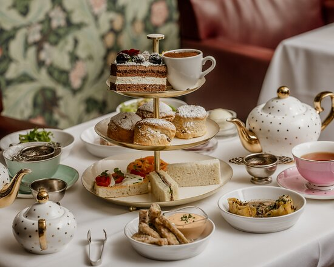
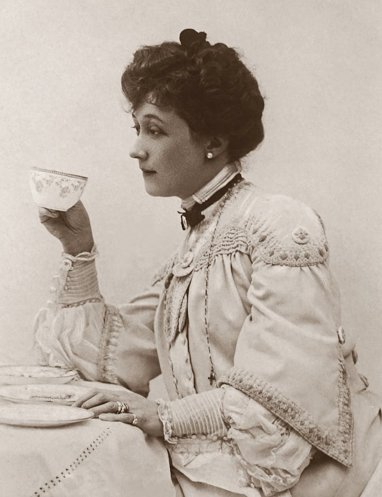
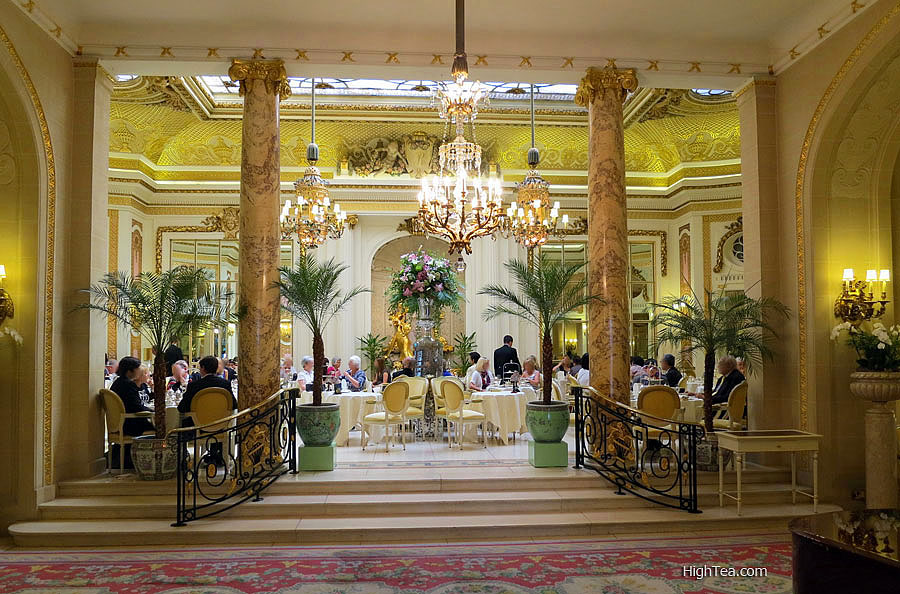
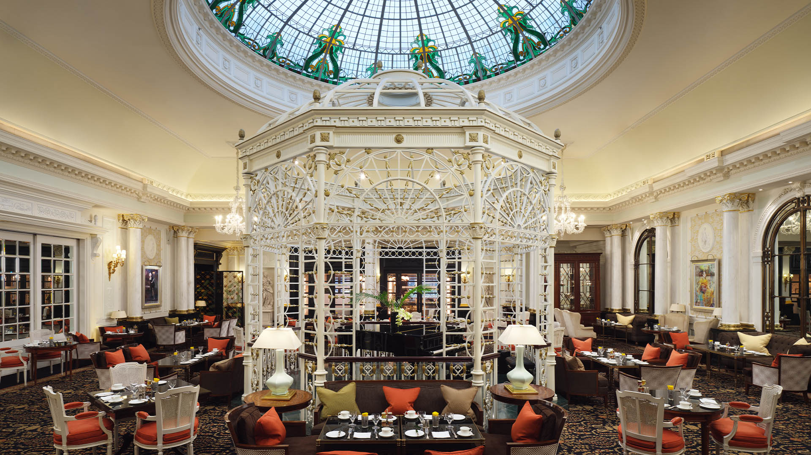
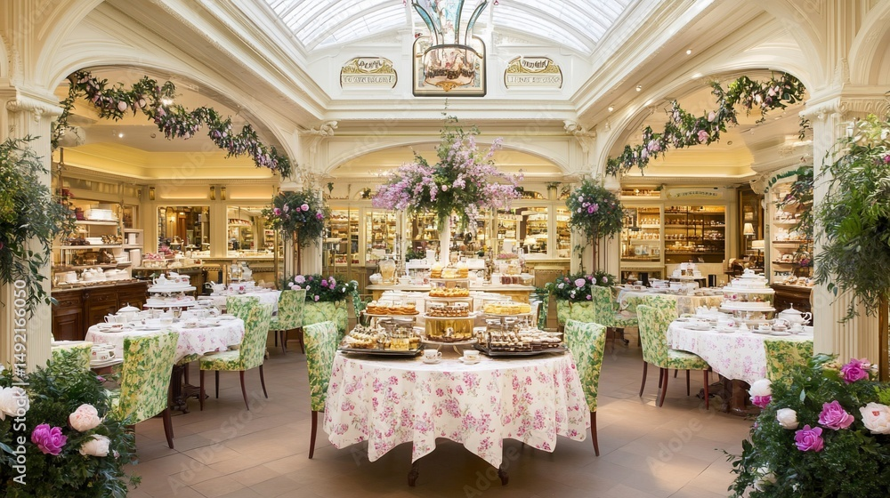

No trip to London is truly complete without experiencing the legendary British afternoon tea. Rooted in aristocratic history dating back to the 1840s, this elegant ritual has evolved from a private afternoon snack into a world-famous cultural experience. Surrounded by London’s historic charm, sipping fine Earl Grey alongside freshly baked scones, clotted cream, and delicate finger sandwiches is an absolute must for any traveler wanting to live like a true local.

An authentic glimpse into the Victorian roots of afternoon tea culture.

The Ritz London, Palm Court: A timeless experience with ornate décor, live piano music, and 18 loose-leaf teas. Price: from £95 per person.

The Savoy, Thames Foyer: Offers a grand setting with over 30 teas, creative sandwiches, scones, and pastries. Champagne upgrades are available for a festive touch.

Fortnum & Mason, Diamond Jubilee Tea Salon: Located on Piccadilly, this elegant tea salon serves traditional three-tiered afternoon tea with vegan, vegetarian, and gluten-free options. Guests can also explore the store’s gourmet offerings afterward.
